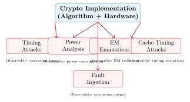

Chapter 8: Side-Channel Attacks and Countermeasures¶
8.1 Side-Channel Attack Overview¶
Side-channel attacks extract secret information from the physical implementation of a cryptographic algorithm, rather than attacking the mathematical structure. Even mathematically secure algorithms can be completely broken by side-channel attacks.

8.2 Attack Types¶
8.2.1 Timing Attacks¶
Timing attacks measure the execution time of cryptographic operations to infer secret values.
Variable-Time Code is Dangerous
Any code path that depends on secret data — branches, memory accesses, division operations — can leak timing information. This is especially dangerous in:
-
Comparison functions (must use constant-time comparison)
-
Rejection sampling (FALCON signature is particularly vulnerable)
-
Polynomial coefficient operations with data-dependent control flow
Example: Dangerous vs Safe Comparison¶
/* DANGEROUS: Early exit leaks length of matching prefix */
int bad_compare(const uint8_t *a, const uint8_t *b, size_t len) {
for (size_t i = 0; i < len; i++) {
if (a[i] != b[i]) return 0; // Timing reveals mismatch position!
}
return 1;
}
/* SAFE: Constant-time comparison -- no early exit */
int ct_compare(const uint8_t *a, const uint8_t *b, size_t len) {
volatile uint8_t result = 0;
for (size_t i = 0; i < len; i++) {
result |= (a[i] ^ b[i]); // Always processes all bytes
}
return result == 0; /* 1 if equal, 0 if different */
}
/* BEST: Use libsodium or liboqs built-in constant-time memcmp */
#include <sodium.h> /* or */
#include <oqs/common.h>
int secure = (0 == sodium_memcmp(a, b, len));
int secure2 = OQS_MEM_secure_compare(a, b, len); /* liboqs */
8.2.2 Simple Power Analysis (SPA)¶
SPA examines a single power trace to identify operations. An attacker observing the power waveform of a device can distinguish NTT operations, multiplication sequences, and control flow.
8.2.3 Differential Power Analysis (DPA)¶
DPA uses statistical analysis of many power traces to recover secret keys, even with noise:
-
Collect \(N\) traces \(t_i\) paired with known inputs \(x_i\).
-
For each key hypothesis \(k\): compute predicted intermediate value \(v_i = f(x_i, k)\).
-
Compute the correlation between predicted \(v_i\) and measured traces \(t_i\).
-
The correct key hypothesis produces the highest correlation.
8.2.4 Electromagnetic (EM) Attacks¶
Near-field EM probes can capture localized EM emanations from specific circuits on a chip, sometimes enabling attacks even when power traces are difficult to obtain. EM attacks are particularly effective against FPGAs and embedded processors.
8.2.5 Cache-Timing Attacks¶
Cache-timing attacks exploit timing differences caused by cache hits vs. misses:
/* VULNERABLE: Table lookup with secret index (cache timing leak) */
uint8_t sbox[256]; /* Initialization omitted */
uint8_t bad_substitution(uint8_t secret_index) {
return sbox[secret_index]; /* Cache miss if sbox[secret_index] not cached! */
}
/* SAFE: Constant-time table lookup using bitwise operations */
uint8_t ct_table_lookup(const uint8_t *table, size_t table_len,
uint8_t secret_index) {
uint8_t result = 0;
for (size_t i = 0; i < table_len; i++) {
/* Select table[i] if i == secret_index, else 0 */
uint8_t mask = (uint8_t)(-(uint8_t)(i == secret_index));
result |= mask & table[i]; /* No branch, no cache timing */
}
return result;
}
8.2.6 Fault Injection Attacks¶
Fault injection attacks intentionally introduce faults (voltage glitches, laser pulses, clock glitches) to cause incorrect computation, then analyze the erroneous output.
Fault Attack on ML-KEM Decapsulation¶
ML-KEM’s decapsulation includes a re-encryption check to verify ciphertext validity. If this check is bypassed via fault injection:
-
Attacker sends modified ciphertext \(c' = c \oplus \Delta\) with a single-bit error.
-
Normal: decapsulation detects modification via re-encryption check, returns implicit rejection.
-
With fault: re-encryption check is skipped; decapsulation returns information about \(c'\).
-
An attacker who receives the erroneous output can recover the secret.
/* FIPS 203 Decaps: always re-encrypt and compare in constant time */
int mlkem_decaps(uint8_t *ss, const uint8_t *ct, const uint8_t *dk) {
uint8_t m_prime[32];
uint8_t ct_prime[CIPHERTEXT_LEN];
uint8_t K_bar[32];
/* Step 1: Decrypt to get m' */
mlkem_decrypt(m_prime, ct, dk);
/* Step 2: ALWAYS re-encrypt (no early exit, no branch on result) */
mlkem_encrypt_deterministic(ct_prime, m_prime, dk + OFFSET_H, &K_bar);
/* Step 3: Constant-time comparison of original vs re-encrypted ct */
int match = ct_compare(ct, ct_prime, CIPHERTEXT_LEN); /* ct_compare is CT */
/* Step 4: Select K or K_bar based on match result (constant-time select) */
volatile uint8_t mask = (uint8_t)(-(int8_t)match); /* 0xFF if match */
for (int i = 0; i < 32; i++) {
ss[i] = (mask & m_prime[i]) | (~mask & K_bar[i]); /* CT select */
}
return 0; /* Always return 0; never signal failure via return value */
}
/* Note: In FIPS 203, ss is always returned (implicit rejection) */
8.3 PQC-Specific Vulnerabilities¶
8.3.1 ML-KEM Side-Channel Considerations¶
| Component | Vulnerability | Countermeasure |
|---|---|---|
| NTT butterfly | Power correlates with coefficient products | Masking; hardware constant-time |
| Coefficient comparison | Timing leak in invalid-ct check | Always constant-time compare |
| CBD sampling | Secret-dependent Hamming weight | Balanced bitsliced implementation |
| Modular reduction | Barrett/Montgomery timing variation | Constant-time reduction |
| SHAKE/SHA-3 | Cache-timing on table lookups | Bitsliced SHA-3 implementation |
8.3.2 ML-DSA Side-Channel Considerations¶
ML-DSA’s rejection sampling is a critical source of side-channel leakage:
-
The number of rejections before accepting a signature is secret-dependent.
-
Measuring signing time reveals information about the signing randomness.
-
Countermeasure: Use deterministic signing (hedge signing with entropy) and mask the number of iterations.
8.3.3 FALCON (FN-DSA) Critical Vulnerability¶
FALCON uses Gaussian sampling over the integers with floating-point arithmetic, which is particularly vulnerable:
FALCON FP Arithmetic is a Security Critical Issue
FALCON’s Gaussian sampler uses floating-point (FP) double-precision arithmetic. On many microprocessors:
-
FP operations are not constant-time (denormal numbers, FPU exceptions)
-
Timing of FP division and square root varies with input values
-
This creates exploitable timing channels for private key recovery
Secure FALCON implementation requires either: (1) emulated FP with constant-time guarantees, or (2) dedicated hardware support. The mlkem-native approach uses table-based Gaussian sampling that avoids FP arithmetic entirely.
8.4 Countermeasures¶
8.4.1 Masking¶
Masking splits secret values into random shares to prevent statistical correlation attacks:
/* Boolean masking: split secret 's' into shares s0, s1 where s = s0 XOR s1 */
typedef struct { uint16_t s0, s1; } MaskedCoeff;
MaskedCoeff mask_coefficient(uint16_t s, uint16_t random_mask) {
MaskedCoeff m;
m.s1 = random_mask; /* Random mask (share 1) */
m.s0 = s ^ random_mask; /* Share 0 = s XOR mask */
return m;
}
/* Masked multiplication: computes a*b where b is masked */
/* (a * b) = (a * b.s0) XOR (a * b.s1) */
MaskedCoeff masked_mul_q(uint16_t a, MaskedCoeff b, uint16_t q) {
MaskedCoeff result;
uint16_t new_mask = get_random_uint16();
result.s1 = new_mask;
result.s0 = ((uint32_t)a * b.s0 + (uint32_t)a * b.s1)
/* Note: Full masked NTT requires more sophisticated approach */
return result;
}
8.4.2 Randomization¶
/* Blinded NTT: multiply input by random invertible element before NTT,
* divide after. Prevents power analysis of specific coefficient positions. */
void blinded_ntt(uint16_t *poly, size_t n, uint16_t q) {
/* Step 1: Generate random blinding factor r (invertible mod q) */
uint16_t r, r_inv;
do {
r = oqs_rand_uint16()
} while (r == 0 || !mod_inverse_exists(r, q, &r_inv));
/* Step 2: Blind polynomial: poly[i] *= r (mod q) */
for (size_t i = 0; i < n; i++) {
poly[i] = (uint32_t)poly[i] * r
}
/* Step 3: Standard NTT */
ntt(poly, n, q);
/* Step 4: Remove blinding: poly[i] *= r_inv (mod q) */
for (size_t i = 0; i < n; i++) {
poly[i] = (uint32_t)poly[i] * r_inv
}
}
8.4.3 Physical Countermeasures¶
| Countermeasure | Description | Targets |
|---|---|---|
| Power line filtering | Low-pass filters on Vdd lines reduce high-frequency signal | Power |
| Metal shielding | Conductive shielding around sensitive circuits | EM |
| Decoupling capacitors | Reduce power variation visibility | Power |
| Dual-rail logic | Complementary computation equalizes power per bit | Power, EM |
| Sensor mesh | Active metal mesh detects physical probing | Invasive |
| Voltage monitors | Detect supply voltage glitches | Fault |
| Frequency monitors | Detect clock manipulation | Fault |
| Temperature sensors | Detect thermal attack (laser, cryo) | Fault |
8.5 Evaluation Standards¶
| Standard | Body | Scope |
|---|---|---|
| FIPS 140-3 | NIST | Level 3/4 requires side-channel resistance for physical security |
| ISO/IEC 17825 | ISO | TVLA testing methodology for non-invasive attacks |
| ISO/IEC 15408 | ISO | Common Criteria (EAL 5+) for SCA-resistant hardware |
| EMVCo SCP | EMVCo | Payment card SCA requirements |
| NIST SP 800-90B | NIST | Entropy source testing (affects key generation SCA resistance) |
8.5.1 TVLA (Test Vector Leakage Assessment)¶
TVLA is the standard methodology for assessing side-channel leakage:
-
Two groups: Group A (fixed input) and Group B (random inputs).
-
Power traces: Collect \(N\) traces from each group.
-
Welch’s t-test: Compute \(t\)-statistic comparing the two trace distributions.
-
Decision threshold: \(|t| > 4.5\) at any time sample indicates leakage.
-
First-order TVLA detects linear leakage; higher-order TVLA detects masked leakage.
8.6 Tools for SCA Research¶
| Tool | Language | Capabilities |
|---|---|---|
| ChipWhisperer | Python/C | Capture power/EM; CW-Nano, CW-Pro hardware; TVLA |
| SCALib | Python | Statistical SCA library; SNR, TVLA, profiled attacks |
| Inspector (Riscure) | Java | Commercial; full DPA/DFA suite |
| scared | Python | Side-channel analysis library; aligned trace processing |
| lascar | Python | Trace analysis; DPA, CPA; GPU-accelerated |
import numpy as np
from scalib.metrics import SNR
from scipy import stats
def tvla_first_order(traces_fixed: np.ndarray,
traces_random: np.ndarray,
threshold: float = 4.5) -> np.ndarray:
"""
First-order TVLA: Welch's t-test comparing fixed vs random input traces.
Returns t-statistic for each time sample.
"""
# Welch's t-test (unequal variance)
t_values, _ = stats.ttest_ind(traces_fixed, traces_random,
equal_var=False, axis=0)
# Find leaking samples
leaking = np.abs(t_values) > threshold
n_leaking = np.sum(leaking)
if n_leaking > 0:
print(f"WARNING: {n_leaking} leaking time samples detected!")
print(f"Max |t| = {np.max(np.abs(t_values)):.2f} (threshold={threshold})")
else:
print(f"PASS: No leakage detected. Max |t| = {np.max(np.abs(t_values)):.2f}")
return t_values
8.7 Summary¶
-
Side-channel attacks are practical threats to PQC implementations, independent of mathematical security.
-
Timing attacks exploit variable-time execution; use constant-time primitives throughout.
-
DPA/EM attacks exploit power/EM correlations with secret data; masking is the primary countermeasure.
-
Fault injection attacks can bypass security checks; always use constant-time, branch-free security checks.
-
ML-KEM requires constant-time comparison in decapsulation; FIPS 203 mandates implicit rejection (always returns output, never branches on decryption failure).
-
FALCON’s floating-point Gaussian sampler is a critical implementation challenge; requires special care or hardware support.
-
TVLA (via tools like ChipWhisperer + SCALib) is the standard methodology for evaluating side-channel leakage.
-
FIPS 140-3 Level 3/4 requires physical side-channel countermeasures for hardware security modules.